Design System
Sebuah panduan visual lengkap yang berisi komponen-komponen UI dan pola fungsional dari komponen-komponen tersebut yang minimalis, konsisten, dan mudah dipahami untuk semua orang.
Foundation
Dasar-dasar visual: warna, tipografi, ikon, gerakan, responsivitas, dan identitas brand.
3 BagianKomponen
Elemen UI yang dapat digunakan ulang: tombol, formulir, kartu, tabel, dan lainnya.
4 ElemenLayout
Struktur penempatan elemen dan adaptasi responsif di seluruh aplikasi.
2 BagianColor & Branding
Warna sebagai identitas khas yang dari brand, yang lebih mudah untuk dikenali oleh User.
Emerald — Aksen Utama
Amber — Secondary & Accent
Warna Semantik
Berhasil, aktif, tersedia
Error, hapus, bahaya
Peringatan, perhatian
Info, tips, panduan
Logo
Logo utama BantuKasir — digunakan tanpa teks di komponen ikon
Typography
Menggunakan font Sora untuk heading hingga subjudul, dan Plus Jakarta Sans untuk teks paragraf hingga detail. Sistem tipografi mencakup heading, body, dan detail text untuk hirarki informasi yang jelas.
| Level | Role (Token) | Size | Line Height | Weight | Visual Preview |
|---|---|---|---|---|---|
| D1 | Display/Sora-60- Bold |
60px | 72px | Bold | the lazy fox jump over the brown dog |
| H1 | Heading/H1-40- Bold |
40px | 48px | Bold | the lazy fox jump over the brown dog |
| H2 | Heading/H2-32- Bold |
32px | 38.4px | Bold | the lazy fox jump over the brown dog |
| H3 | Heading/H3-24- SemiBold |
24px | 28.8px | SemiBold | the lazy fox jump over the brown dog |
| H4 | Heading/H4-20- SemiBold |
20px | 24px | SemiBold | the lazy fox jump over the brown dog |
| H5 | Heading/H5-16- SemiBold |
16px | 20px | SemiBold | the lazy fox jump over the brown dog |
| H6 | Heading/H6-12- SemiBold |
12px | 16px | SemiBold | the lazy fox jump over the brown dog |
| P/L | Paragraph/Large | 18px | 21.6px | Regular | the lazy fox jump over the brown dog |
| P/M | Paragraph/Medium | 16px | 19.2px | Regular | the lazy fox jump over the brown dog |
| L/M | Label/Medium | 12px | 14.4px | Medium | the lazy fox jump over the brown dog |
| L/S | Label/Small | 10px | 12px | Medium | the lazy fox jump over the brown dog |
| L/XS | Label/Extra Small | 8px | 9.6px | Medium | the lazy fox jump over the brown dog |
Icon
Ikon memberikan petunjuk visual yang cepat dikenali. Dalam sistem ini menggunakan emoji dan simbol karakter sebagai ikon ringan. Untuk produksi, gunakan library ikon seperti Lucide, Heroicons, atau Material Symbols.
Ukuran Ikon
Set Ikon yang Digunakan
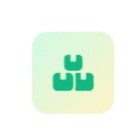
Box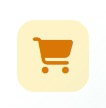
Cart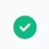
Check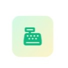
Settings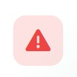
Danger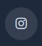
Instagram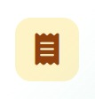
NoteBranding
Identitas visual BantuKasir: logo, warna brand, dan panduan penggunaan untuk menjaga konsistensi brand.
Logo
Warna Brand
#10b981
#f59e0b
#1a1a1a
#fafafa
Button
Tombol BantuKasir dirancang untuk keseragaman aksi di seluruh aplikasi. Fokus utama adalah pada konsistensi ukuran dan penggunaan ikon untuk memperjelas konteks navigasi.
Ukuran
Tersedia dalam tiga ukuran standar untuk menyesuaikan dengan kepadatan informasi di layar.
Dengan Ikon
Ikon membantu pengguna mengidentifikasi aksi dengan lebih cepat. Dapat diletakkan sebelum teks atau digunakan untuk navigasi yang lebih intuitif.
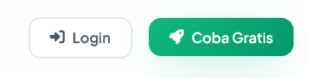
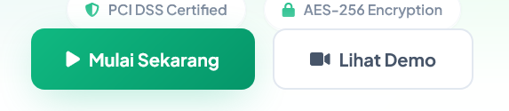
Contoh Penggunaan
Variasi button untuk kategori, filter, dan navigasi di berbagai konteks penggunaan.
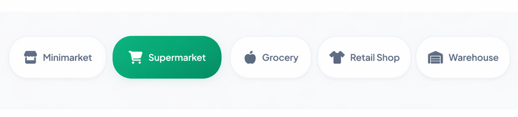
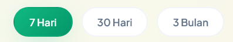
Card
Kartu mengelompokkan informasi terkait dengan fokus pada visual yang dominan dan konsisten.
Table
Tabel digunakan untuk menampilkan data terstruktur secara ringkas dan mudah dipindai. Mendukung berbagai mode: default, hover, dan dengan aksi baris.
Contoh Tabel
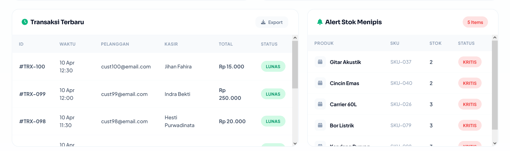
Main Content
Representasi visual dari struktur utama halaman dan tata letak konten yang konsisten.
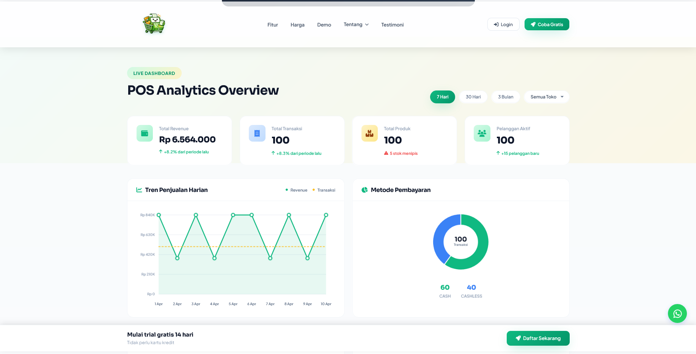
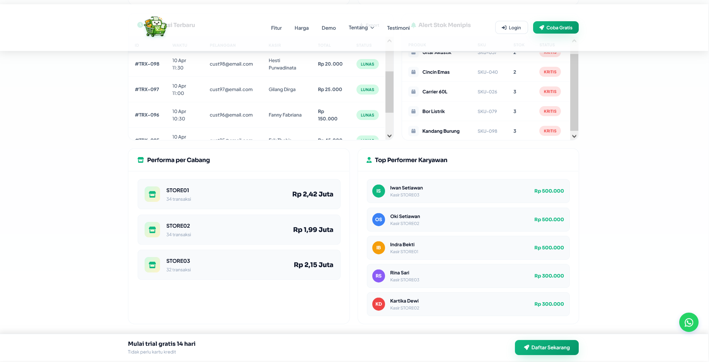
Responsives
Adaptasi tata letak dan kepadatan elemen berdasarkan ukuran perangkat dan resolusi layar.
Responsive Breakpoints
| Nama | Min-width | Perilaku |
|---|---|---|
| Mobile | 0px | Sidebar tersembunyi, single column, padding kecil |
| Tablet | 768px | Sidebar muncul, 2 column grid |
| Desktop | 1024px | Full layout, sidebar tetap, multi column |
| Wide | 1440px | Max-width container, konten terpusat |
Comfortable
Digunakan untuk Desktop dengan ruang yang luas dan keterbacaan maksimal.
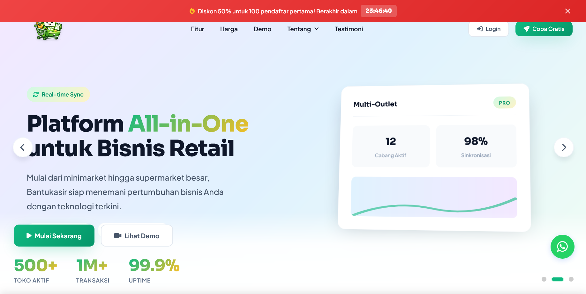
Compact
Optimal untuk Tablet atau perangkat dengan layar menengah.
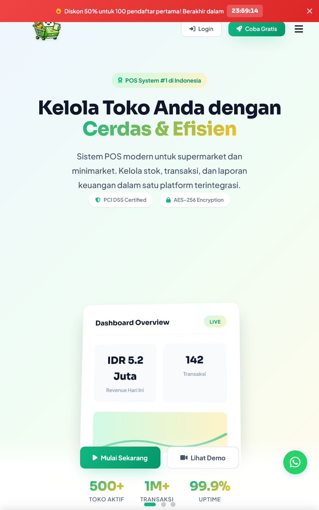
Tiny
Khusus untuk Mobile dengan ruang sangat terbatas, fokus pada elemen kritikal.
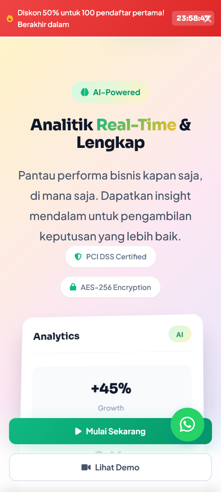